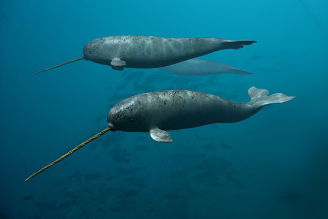

|

|
-
Carnívoros Versáteis:
Narvais são carnívoros e têm uma dieta variada.
Focam principalmente em presas como peixes, lulas e camarões.
-
Variedade de Espécies:
A dieta dos narvais pode incluir diversas espécies.
A escolha das presas depende da disponibilidade local de alimentos.
-
Presas Comuns:
Exemplos de presas comuns incluem peixes como o ártico, bacalhau, enguia do Ártico e perca.
-
Dentes Longos e Afiados:
Narvais utilizam seus dentes longos e afiados para caçar presas.
Perfuram cardumes de peixes ou lulas durante o processo de caça.
-
Ingestão Inteira:
Após a caça bem-sucedida, a presa é engolida inteira.
Narvais não possuem dentes adicionais para mastigar.
-
Funções Múltiplas dos Dentes:
Além da caça, os dentes longos desempenham funções sociais, sensoriais e de orientação.
|